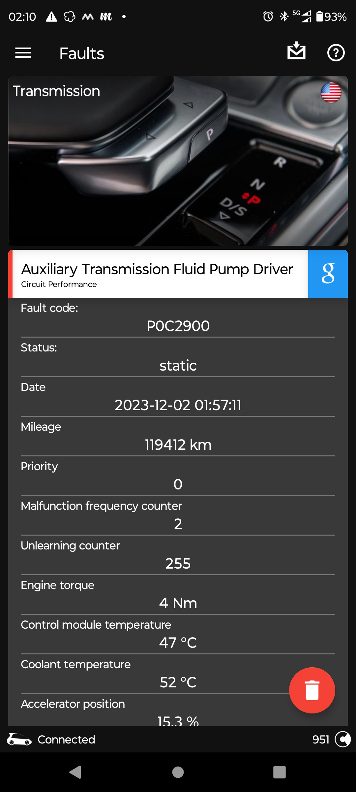
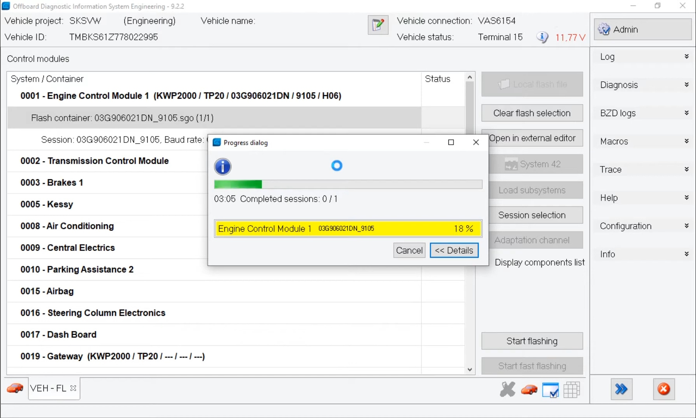
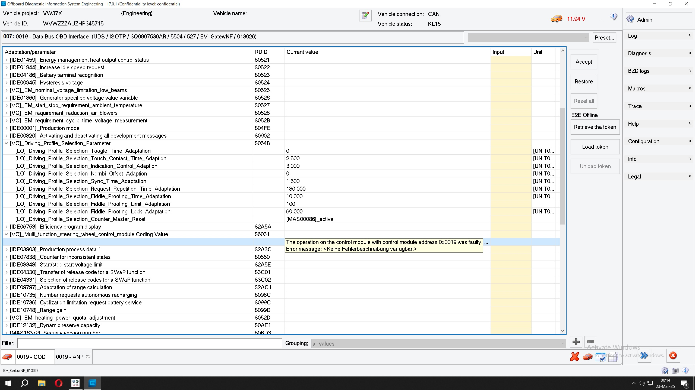
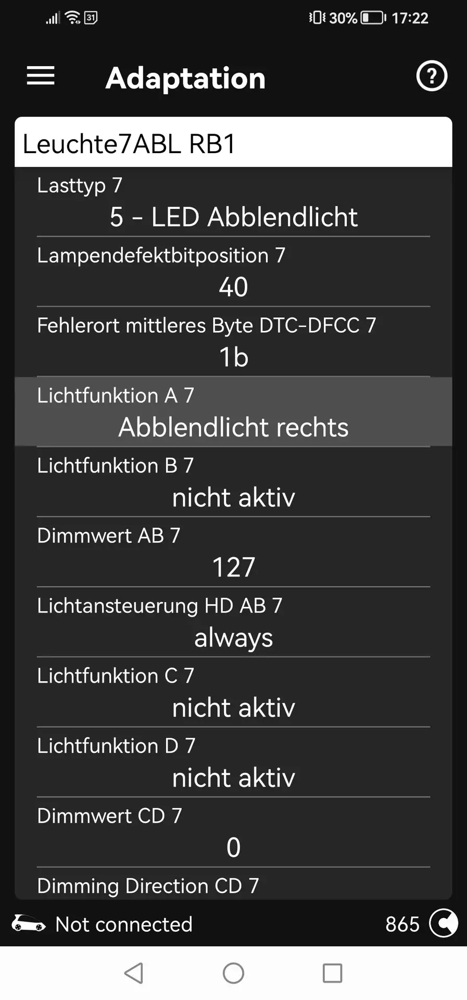
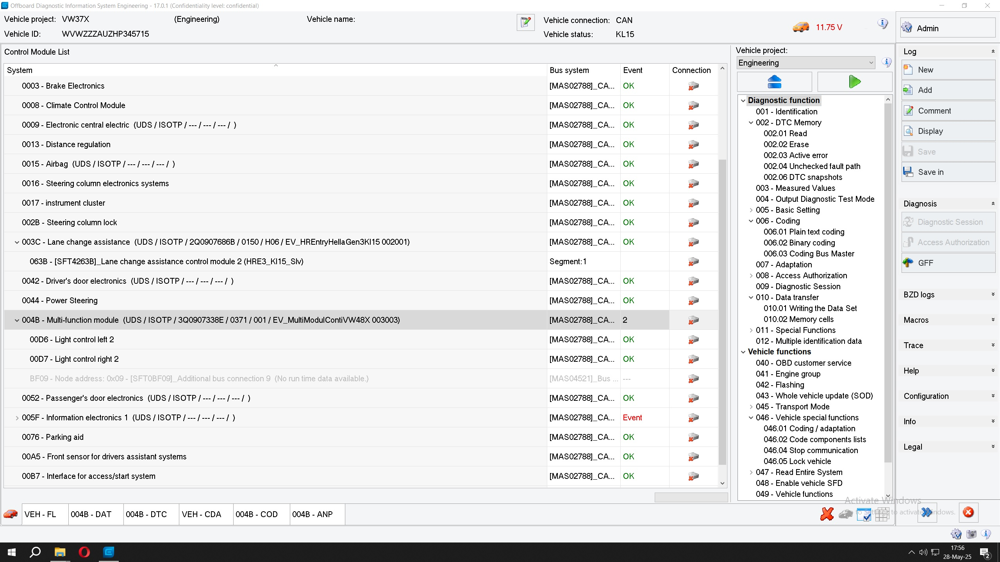

Federico Di Marco - Golf MK7 Facelift retrofits page (fededim.github.io)

I’m a senior software engineer, born in Genova, Italy, with a master degree in computer science, in the second half of his forties.
I started using a computer at six years old, went through logo, basic, assembly, C/C++, java and finally to .NET and .NET core. Proficient also in databases, especially Sql Server and reporting. Let’s say I also have some experience in security but mainly in the past, now things have become much more difficult and I do not have too much time to keep myself updated, but sometimes I am still kicking in.
I am a fan of videogames, technologies, motorbikes, travelling and comedy (click my name above for my main page).
Famous quotes:
- "No one can imagine how cruel an entire country comes to be when it targets someone, making up stories, going so far as to slander, trampling on the most basic rules of civilized living." (Gaetano Afeltra, an italian journalist and writer).
VW Group hardware interfaces for retrofits
For performing retrofits you must have a hardware OBD II interface in order to configure the new optional extras which you have retrofitted inside your car control units. The hardware OBDII interfaces which I use are (they both support all VW group car, so VW, Seat, Skoda, Audi, etc.):
- VNCI 6154: this is best unofficial chinese clone of the original Volkswagen 6154 interface and it supports all its functions for a bargain price (around 130$). It works with both the official Volkswagen software Odis Service and Odis Engineering which require a laptop/computer (see here for details) and it supports both cable and wireless connection. This is a must have for performing any retrofits.
- OBDeleven: this OBD11 dongle includes a very usable modern mobile app for the quick configuration and tweaking of your car. but it less powerful than the combination of VNCI 6154A + ODIS (there are functions which it can't perform like flashing, writing datasets, etc.). So this interface is optional (you can do everything with VNCI 6154), but it is wireless, very small to keep in your car (I always leave it connected to the OBD II port of my car) and it is very handy due to their mobile app. Moreover you can check any faults anywhere you are or read live data while driving using its mobile app. Price 100$.
Note: I bought it in 2019 the second version and it was sold as a product (so you paid only once and luckily it is still like this today for me), unluckily the greedy, ruthless mind of businesses following the modern fad (e.g the transformation of products into services) turned it into a service requiring you to pay an annual subscription becoming now much more expensive. So if you are private like me (e.g. you do not perform retrofits as work and you use it occasionally) OBD11 is less appealing than VNCI 6154 though much more user friendly for the common features (personally it would have been wiser to make you pay according to the number of times you actually use it).
Golf MK7 Facelift retrofits guides
I am an owner of a Golf MK7.5 and I have written some detailed guides for a few optional extras I retrofitted on my car, you can find them here:
-
Volkswagen Golf MK7.5 Facelift Blind Spot Assist Retrofit guide:
- 3D printable spacer wedge I designed to fix the setup angle of the new side assist control units 2Q090768x on a Golf MK7. Sample video of installation.
- Sample video of OBD11 live data after 10000 kms of drive.
- Volkswagen Golf MK7.5 Facelift Heated Windscreen Retrofit guide
-
Volkswagen Golf MK7.5 Facelift Lane Assist Retrofit guide
- General overview video
- Extended test video on the highway
- Firmware and associated parameter files with warning time increased from 15 seconds to 60
-
Camera Calibration: it is the process of determining both extrinsic and intrinsic camera parameters (like camera coordinates, focal length, optical center) once installed. It is a mandatory process needed to perform any kind of calculation on an image, like measuring a distance between pixels, estimate depth or 3d structure. It is performed using a predefined calibration pattern consisting of a sheet where a set of objects of a predetermined shape (like squares, circles), size and position is put in front of the camera at a precise distance.
Every camera manufacturer has its own calibration pattern; for Volkswagen it is called VAS 6430. Usually you have to perform calibration at carglass centers where they have all the needed equipment, but if you are skilled enough and you know what you are doing you can perform it by yourself using either official VW ODIS (guided procedure) or OBD11, I quote here an untested OBD11 procedure which I found on a Skoda owner website:
- Position the car in front of the calibration pattern as in this picture
- Measure 4 wheel arches and go to module A5 Front Sensors Driver Assistance System performing the security access with code 20103
- Change diagnostic service --> VW
-
Go to Adaptation (confirm all values!)
- Body height wheel house edge-Body height left front wheel house edge --> Enter value
- Body height wheel house edge-Body height right front wheel house edge --> Enter value
- Body height wheel house edge-Body height left rear wheel house edge --> Enter value
- Body height wheel house edge-Body height right rear wheel house edge --> Enter value
- Distance to calibration field --> Enter 1500
- Calibration target position --> Just confirm
- Axel offset --> Just confirm
-
Go to Basic Configuration
- Search calibration target
- Initial online configuration
- Static calibration costumer service
- Change diagnostic service --> End of assembly line
- Basic Configuration --> Static calibration end of assembly line
If everything is fine the fault about "No basic settings" should be removed and this marks the end of the static calibration (called static because the car is not moving). Since this calibration is never perfect the lane assist camera A5 after this phase enters another calibration phase called dynamic because it is performed automatically by the camera while you drive (you have to drive for at least 500 kms), the more you drive, the better the calibration will be fine-tuned, you can check this in the Live Data menu option (Dynamic calibration, status and Dynamic calibration, details).
- Volkswagen Golf MK7.5 Facelift Park Steering Assist 3.0 Retrofit guide: I still need to write the guide (as far as I know there isn't any available), I have though made all the necessary pictures during the retrofit, I just need some time to draft it. Sample videos here:
- Volkswagen Golf MK7.5 Facelift PXC dynamic light assist: I bought used 5G194108xB GTE headlights the ones with lower blue "whiskers" and this was an easier retrofit for me because the car had PXA headlights from factory so it was just a matter of replacing them and adding a single wire for each one using T shaped wire tap. What "drove me crazy" was instead buying a used set of working headlights (I had to send them back two times) and then to setup the right codings which I quote down below. Sample videos here:
- Volkswagen Golf MK7.5 Facelift door exit lights: very easy just a sample video.
{kind=link}
Volkswagen Golf MK7.5 Facelift retrofits summary
My car had adaptive cruise control, PXA led lights, front and rear park assist sensors and Discover Media navigator from factory, I retrofitted successfully:- the heated windscreen
- the lane assist camera+traffic sign recognition+high beam assist (initially)
- blind spot assist with the new 2Q090768x control units supporting emergency maneuver braking: in order to support maneuver braking I had also to update the firmware of the 03 ABS control unit, be sure to perform a backup of the 03 control unit with Odis before doing this otherwise you would get a dead car!
- the park steering assist 3.0 for automatic parking
- the PXC dynamic light assist using Golf MK7 Facelift GTE headlights with "whiskers" in blue colour
- General overview video
Full Odis Backup files
I quote here the full odis backup of codings + adaptations for you convenience and also for me as a backup:Useful fixes for common errors
13: Adaptive Cruise Control
- C110300: Adaptive cruise control sensor misaligned: Check this video
4B: Multi function module
- C119F00 High beam variant implausible (SOA mismatch): Check my post on OBD11 forums
02 - Transmission electronics (DSG DQ381)
-
Trans. in emergency mode. You can continue driving: Due to this error the DSG works only with even gears (2,4,6) or with odd gears at all (1,3,5,7). The problem is very common among VW group cars and it is due to a faulty mechatronic unit of the DSG. The solution is to replace as soon as possible the mechantronic unit of the DSG which costs around 1200€. In 180000 kms it happened me only once at around 88000 km.
- You can check for example this video which explains the issue
- You can check also this video about the issue, it is in Italian but you can use the autogenerated English audio/subtitles from YouTube.
- Another video about the issue, it is again in Italian but you can use the autogenerated English audio/subtitles from YouTube.
-
Error: transmission. You can continue driving: This is usually recorded with error P0C29000 Auxiliary Transmission Fluid Pump Driver in Odis/OBD11. It can happen after you have updated the gearbox software according Volkswagen campaign 34K1. Essentially it has been reported that an auxiliary hydraulic pump inside the DSG can rarely fail destroying the gearbox and the software update is used to track and prevent a possible failure. After performing the 34K1 DSG software update you should check if the aforementioned error happens within 1000 kms of drive, if this happens the 34K1 campaign entitles to replace the auxiliary hydraulic pump inside the DSG with an improved one for free. Unluckily in my car the error showed up only after 31000 kms, so the cost of the replacement of the pump was at my expense, notwithstanding a formal complaint on my part to Volkswagen. Since it happened in a period of expenses of my life, the repair was costly (more than 2000€) and the same Volkswagen mentioned that it occurred rarely in its 34K1 technical service bulletin (TSB, sorry this one is Italian), I decided not to have it fixed at my expense (the warranty ended around year before, moreover it was a recall due to a design defect - the pump had to be replaced with an improved one - so IMHO Volkswagen should have paid for this). Luckily it happened at 119000 of drive and the DSG is still working today in my car, which has reached around 180000 kms (so it has been working flawlessly for around 60000 kms), but cases of destroyed gearbox have been reported. The auxiliary additional pump seems to be activated during the start/stop phase, so disabling it could help to postpone the damage.
- You can check 34K1 TSB. Note: even if this one is for Golf R, it applies to many VW group cars with DSG DQ381 manufactured in the first months of 2017.
- You can check this video with the detail of the damage and repair, it is in German but you can use the autogenerated English audio/subtitles from YouTube.
- You can check also this video with the detail of the damage and an incredible rough repair (the gear box had to be replaced), it is in Italian but you can use the autogenerated English audio/subtitles from YouTube.
-
The original screenshot of OBD11 when the error firstly appeared. Since it is a static error it can't be resetted (resetting only updates the kms when it happened)

Other interesting articles/guides about retrofits
- How to replace/upgrade the gateway (requires online ODIS Service)
- How to hack a Volkswagen Golf Power steering ECU (very interesting article)
VW ECUs configuration
Just some information about the main configuration parameters of VW electrical control units:- Firmware: this is the software which runs on the electrical control unit to provide all its functionalities. The firmware can only be flashed using any VW Odis software and it is a long-running task ranging from a few minutes up to 10 hours, mainly due to the moderate size of the data to be transferred (from 0.5MB up to 300MB) and the slow transfer speed of car bus (e.g. CANBUS).
ODIS firmware flashing
- Parametrization: usually for economic reasons (developing software is a time.consuming operation which costs) control units firmware is shared between different car models of the same manufacturer (for Volkswagen Golf, Passat, T-Roc, Tiguan) and even between manufactures of the same group (Volkswagen, Seat, Audi, Porsche, etc.). Obviously, every car has its own physical and optional extras so some parameters need to be tweaked according to the particular car where the control unit is installed and also, the functionalities available in the car. This is done through parametrization, e.g. by uploading appropriate binary data, usually provided as different XML files (also known as datasets) for every control unit matching the car characteristics and optional extras configuration. This parametrization data can only be flashed using any VW Odis software and usually it is very fast (a few seconds) because the data to be transferred consists in a few KBs.
Note: when updating either firmware of parametrization all possible errors show in the display of the car beeping (it becomes like a Xmas tree :-) and even some optional extras activate without any reason (rear wipers, etc.), probably because the bus is saturated by the control unit performing the flashing process, so the other control units can't exchange messages with each other and start raising all possible errors. Luckily after the flashing operation has finished, everything is fine, but you have to clear all the errors code which still remain displayed on your dashboard. The first I performed this operation by myself I was unaware of this behaviour and I was crossing fingers if my car would still be running afterwards, which luckily did :-). However, I share this information because someone could not be so confident and trustful like me (and if you do not know what are you doing it is wiseness). AND FOR ANY REASON DO NOT EVER INTERRUPT A FLASHING OPERATION OTHERWISE YOU WOULD BE HIGH LIKELY LEFT WITH A DEAD CONTROL MODULE.
ODIS Dataset upload (aka parametrization)
-
Coding: it specifies the features and optional extras activated in the control units. Typically, every control unit has a sequence of bytes responsible for coding (between from a few bytes up to 40) and coding involves changing one or a set of bits along the sequence, each one associated with the enablement of a particular feature. For practical reasons, besides a plain binary/hex data editor for the sequence on bytes, software like Odis and OBD11 also provide, for supported control units and options, a meaningful description of the codings and their possible values to be picked from a list. So essentially while coding you could be:
- Ticking a checkbox
- Select a possible option from a list of values
- Entering a numerical value
- Changing one or more bits along the sequence of bytes
- Changing an entire byte along the sequence of bytes
OBD11 coding
ODIS Engineering coding
- Adaptation: as the name suggest adaptations are long-term learned values and settings to tweak a specific control unit to function optimally. But sometimes (e.g. after a repair or due to a miscalibration or after a retrofit) you have to force a reset of the auto-learning features or even enter manually some data which is not defined in a brand-new control module after a replacement or in an existing control unit because the car had not originally the retrofitted optional extras. From a practical point of view, adaptations work more or less like codings but there is almost no binary data, only a list of meaningful options (many still in German) where you have to input a meaningful numerical value or choose the correct option from a predefined list.
OBD11 adaptation

VW Odis software
Just some information about the VW Odis software, there are two versions:-
Odis Service: it works only online and you need a login/password called GeKo access (price around 30$-40$ an hour on internet, more convenient for increasing durations, you can also buy it directly at Volkswagen ErWin, but it costs more). You must use this for:
- Removing component protection on specific control units (adaptive cruise control, gateway, dashboard, engine, gear, multimedia unit, gps by the way lane assist, heated windscreen and blind spot assist DO NOT USE component protection in a Golf MK7)
- Replacing the ignition key (e.g. activating immobilizer on a new key)
- Restore the original coding, adaptations and SWAP codes (SWAP = SoftWare As Product, some optional extras are already built-in but disabled and they are activated through SWAP codes like voice commands, travel assist, emergency assist, etc.). There are even other codes, called SVM codes, which allow you to add officially retrofits to your car (and perform coding and adaptations automatically for them), but you have to buy them from VW or authorised resellers (the configuration of the optional extras of your car is linked to the VIN and it is stored on VW servers).
- Perform software updates according to campaigns (on every campaign document there should be a code provided which must be entered in Odis Service to perform the upgrade)
- Fixing severe errors which are not solvable with the other Odis (Engineering, see below)
-
Odis Engineering: it works only offline and it allows you
- Perform coding and adaptations (like OBD11)
- Performing backup/restore of coding/adaptations (like OBD11)
- Check faults (like OBD11 though it provides better details on errors)
- Flashing control units, e.g. updating/downgrading firmware
- Data transfer, e.g. writing xml parameter data on control units: this is the specific data of the car model (Golf, Passat, T-Roc, Tiguan, usually control units firmware is shared between different car models of the same manufacturer) and of the installed optional extras (e.g. the adaptive cruise control could also work the car navigation data to give you also predictive cruise control, etc.) which must be uploaded to the control units usually after a new firmware upgrade / retrofit installation (even though sometimes new firmwares of some control units still use the old parameter data).
- Perform offline guided functions like calibration, basic settings, etc.

OdisBackupCompare
OdisBackupCompare is a tool I developed for extracting the differences between two Volkswagen Odis XML backup files and exporting them in various formats (JSON/PDF).
After installing new control units or wiring in a retrofit, getting everything to work can be frustrating or even impossible without proper configuration of control units. To make troubleshooting easier, I developed this free tool to compare control unit configurations between two cars (maybe I should have done it earlier). I tested it thoroughly on my Golf MK7 Facelift, it supports all electronic control units, even those connected to the secondary buses (subsystems); high likely it should work also with any control unit from a VW group car.
I released it free for everyone under MIT license, you can find the software and the guide on how to use it on my GitHub project page